Samira'sPortfolio 2026
Hoi, ik ben Samira! Ik studeer Digitale Vormgeving aan Artevelde Hogeschool en LUCA School of Arts. Ik vertel graag verhalen met mijn ontwerpen: van illustraties met kleurpotlood tot volledige campagnes, websites en spelletjes. Van Adobe-programma's tot HTML, CSS en JS.
Nu zoek ik een toffe stageplek waar ik nog heel wat kan bijleren (en af en toe mijn schetsboek mag bovenhalen). Wie weet vertel ik mijn volgende verhaal wel bij jullie?
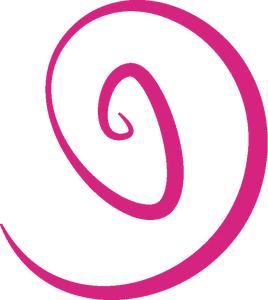
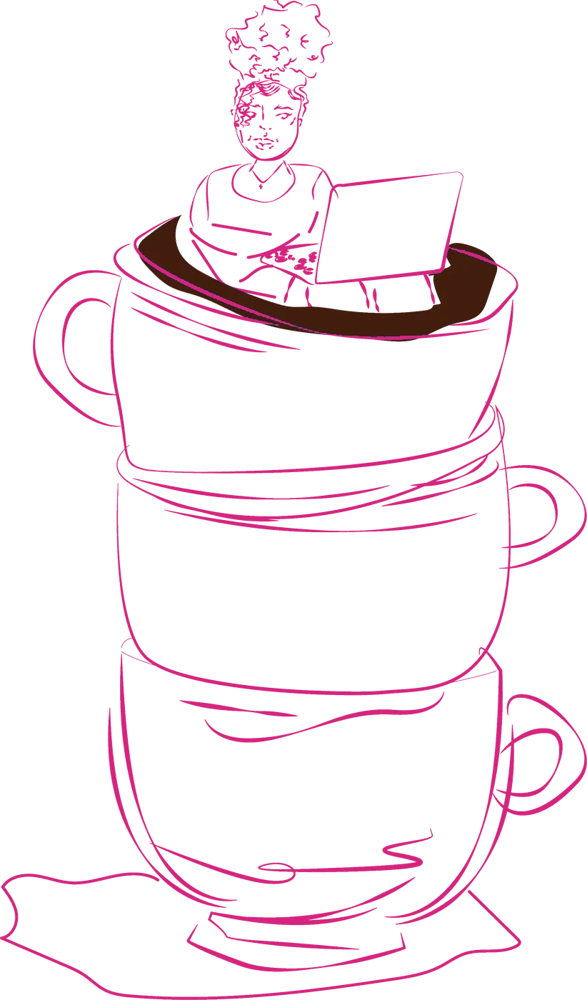
zie meer over mij!Take a sneak peek
Met Studio Yumi teken, stempel en snij ik een warme, handgemaakte huisstijl voor Flordi in Gent.
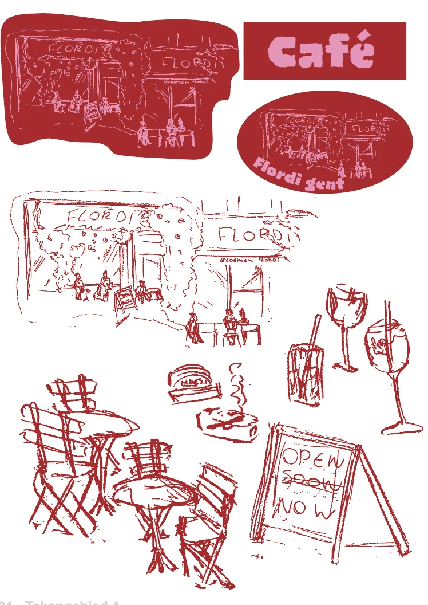
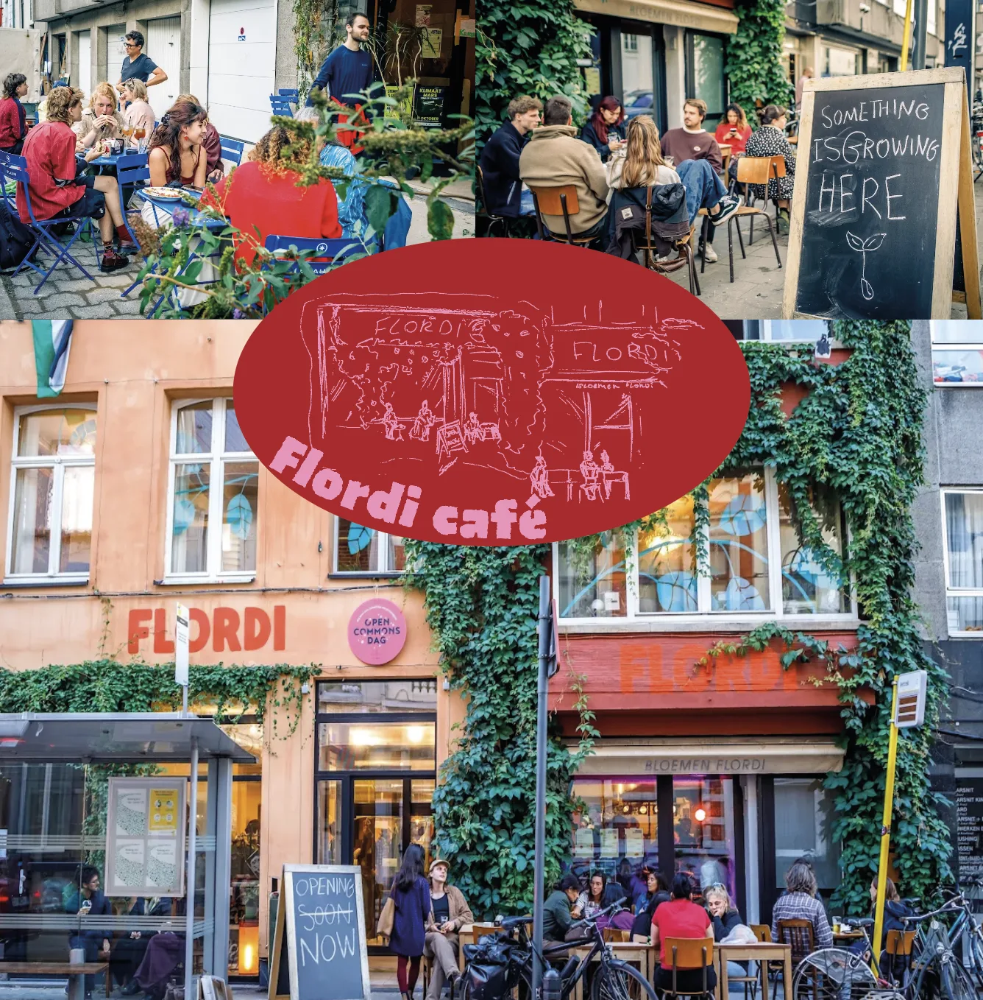
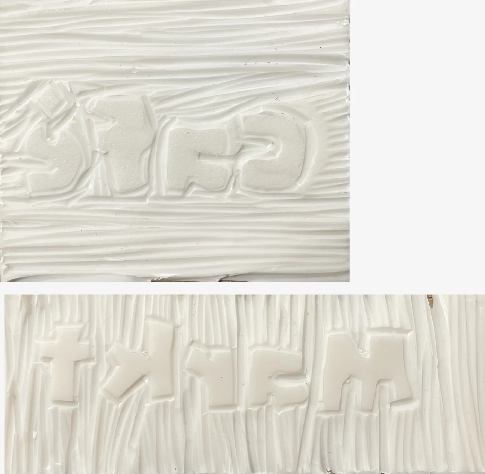
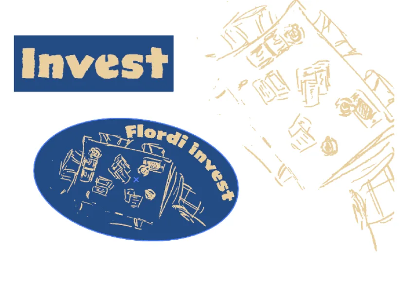
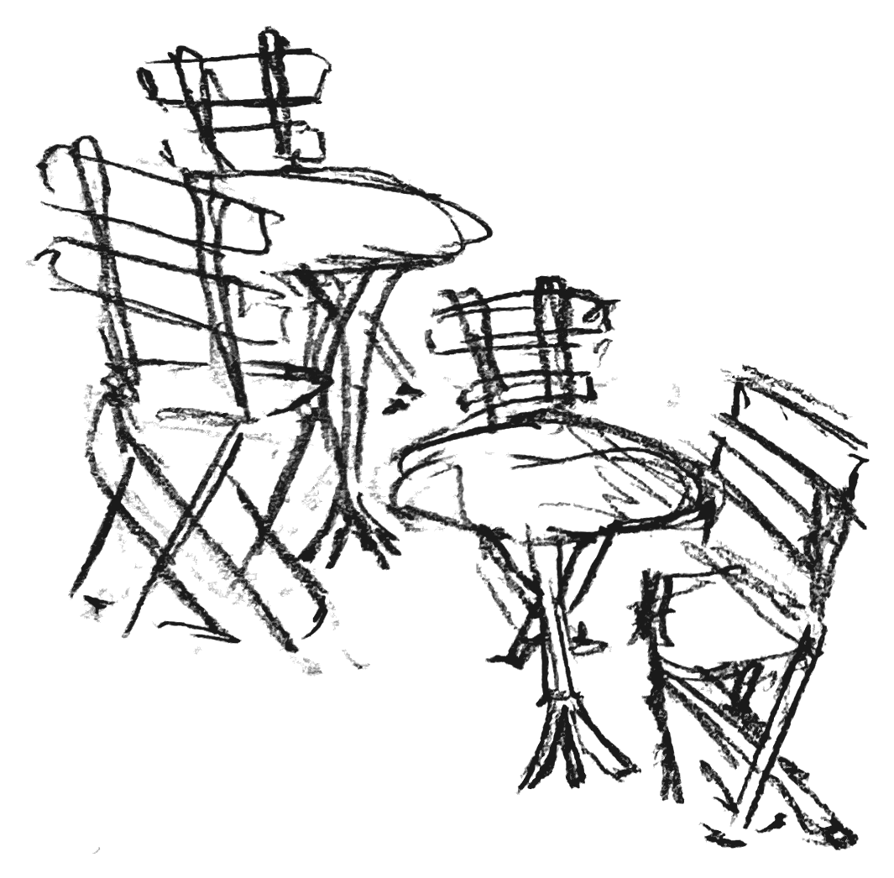
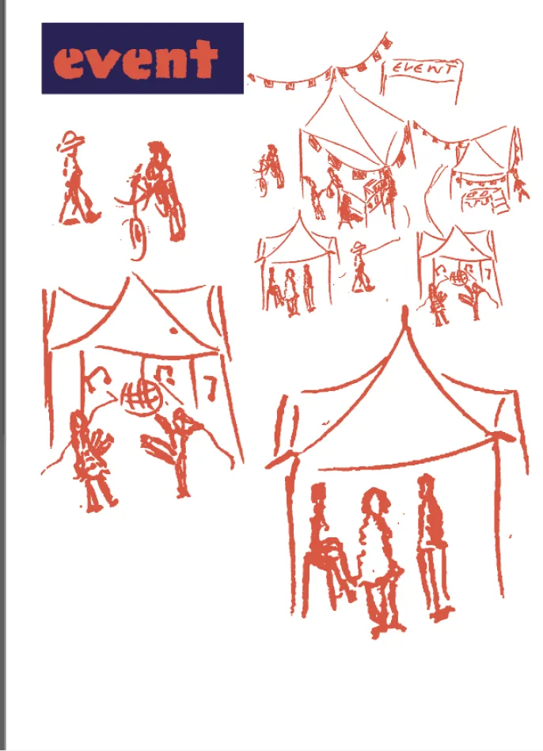
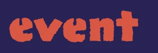
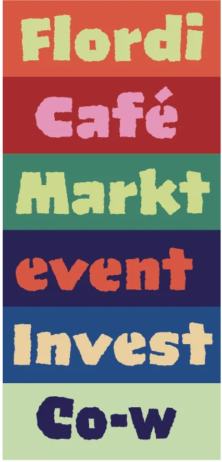
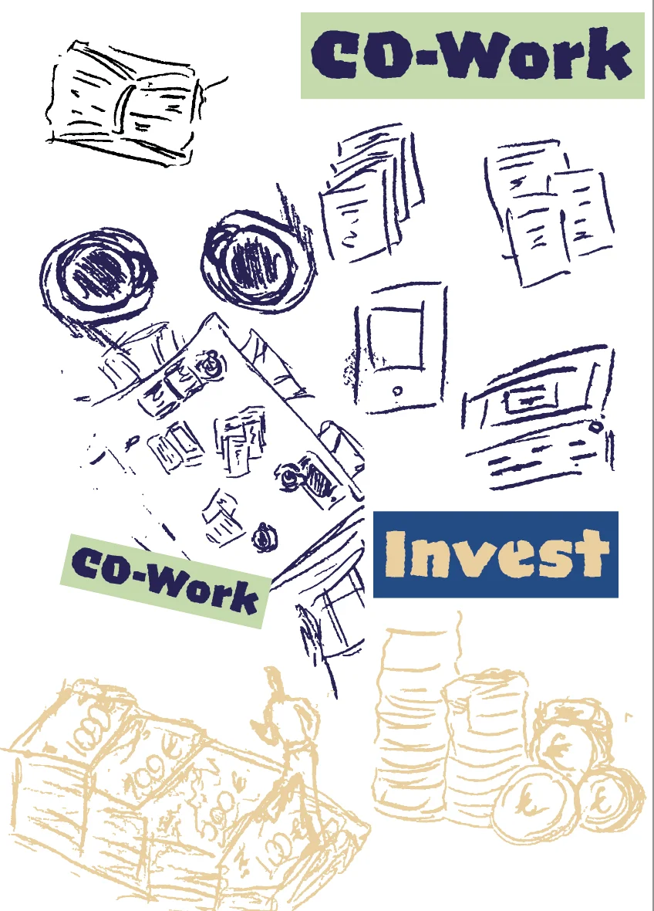
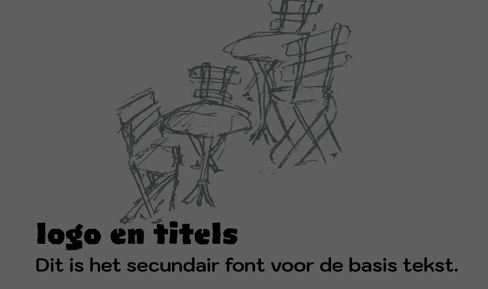